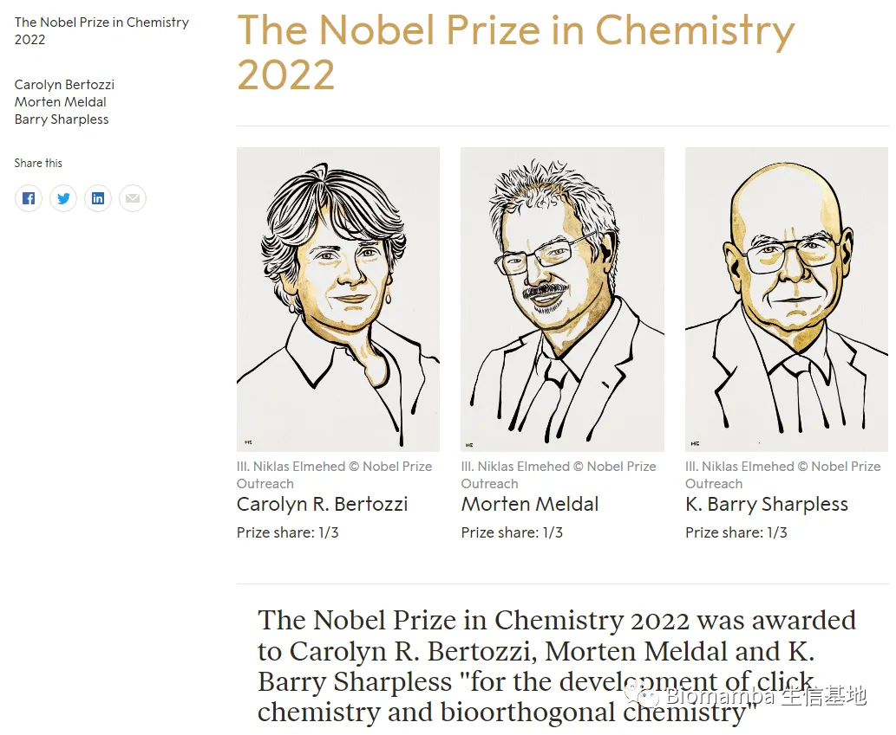

有多少生物医药领域的人"抢"走了诺贝尔化学奖？
原文：https://mp.weixin.qq.com/s?__biz=MzAwMzIzOTk5OQ==&mid=2247493229&idx=1&sn=4dc105bad9420c4b68efa317e1d6a01b&chksm=9b3c9f3dac4b162bf2521d97b307c7baaf5c0458b9be942c5dc72811bb5c102c220d8f0aebf9#rd 合集：漫谈胡侃
点击化学和生物正交化学
前天刚写完诺贝尔生理学或医学奖的推送(最强学二代，父子双双拿诺奖)，隐隐约约觉得今年的诺贝尔化学奖也会与生物沾边。几个小时前诺贝尔化学奖已然放榜，颁给了Carolyn R. Bertozzi, Morten Meldal, K. Barry Sharpless三位化学家。其中的Carolyn Bertozzi 将点击化学带入了一个新的维度，并正在通过她的生物正交反应为针对性的癌症治疗等做出巨大贡献[1]。她本人也曾在Massachusetts General Hospital 和Howard Hughes Medical Institute有过工作经历，主要研究领域为糖生物学 ，并在(与细胞识别 和细胞通讯 密切相关的)细胞表面寡糖方面的研究处于学科的最前沿[2]。得，实锤了，至少是半个生物医药人；这国庆假期还是歇不成，推送还得接着写。

化学奖中的生物人
我们来细数一下究竟有多少诺贝尔化学奖颁发给了生物医药相关的科学家/研究[3]。当然了，这事有多种理解方式：首先生物体是依赖于化学基础存在的，生物和化学本就难解难分；其次生物医药方面的研究确实占领了诺贝尔化学奖的一席之地；再次，作为生物人，我们也不得不感谢诸多的化学家为共筑生物与医药领域做出的伟大贡献。 年份| 获奖者| 获奖原因 ---|---|--- 1902| 赫尔曼·费歇尔| 在糖类和嘌呤合成中的工作 1907| 爱德华·比希纳| 生物化学研究中的工作和发现无细胞发酵 1915| 里夏德·维尔施泰特| 对植物色素的研究，特别是对叶绿素的研究 1927| 海因里希·奥托·威兰| 对胆汁酸及相关物质的结构的研究 1928| 阿道夫·温道斯| 对甾类的结构以及它们和维他命之间的关系的研究 1929| 阿瑟·哈登| 对糖类的发酵以及发酵酶的研究 汉斯·冯·奥伊勒·切尔平 1930| 汉斯·费歇尔| 对血红素和叶绿素的组成的研究，特别是对血红素的合成的研究 1937| 沃尔特·霍沃思| 对碳水化合物和维生素C的研究 保罗·卡勒| 对类胡萝卜素、黄素、维生素A和维生素B2的研究 1938| 里夏德·库恩| 对类胡萝卜素和维生素的研究 1939| 阿道夫·布特南特| 对性激素的研究 1945| 阿尔图里·伊尔马里·维尔塔宁| 对农业和营养化学的研究发明，特别是提出了饲料储藏方法 1946| 詹姆斯·萨姆纳| 发现了酶可以结晶 约翰·霍华德·诺思罗普| 制备了高纯度的酶和病毒蛋白质 温德尔·梅雷迪思·斯坦利 1947| 罗伯特·鲁宾逊| 对具有重要生物学意义的植物产物，特别是生物碱的研究 1948| 阿尔内·蒂塞利乌斯| 对电泳现象和吸附分析的研究，特别是对于血清蛋白的复杂性质的研究 1957| 亚历山大·罗伯兹·托德| 在核苷酸和核苷酸辅酶研究方面的工作 1958| 弗雷德里克·桑格| 对蛋白质结构组成的研究，特别是对胰岛素的研究 1961| 梅尔文·卡尔文| 对植物吸收二氧化碳的研究 1962| 马克斯·佩鲁茨| 对球形蛋白质结构的研究 约翰·肯德鲁 1970| 卢伊斯·弗德里科·莱洛伊尔| 发现了糖核苷酸及其在碳水化合物的生物合成中所起的作用 克里斯蒂安·伯默尔·安芬森威廉·霍华德·斯坦| 对核糖核酸酶的研究，特别是对其氨基酸序列与生物活性构象之间的联系的研究 对核糖核酸酶分子的活性中心的催化活性与其化学结构之间的关系的研究 1975| 约翰·康福思| 酶催化反应的立体化学的研究 1980| 保罗·伯格| 对核酸的生物化学研究，特别是对重组DNA的研究 沃特·吉尔伯特弗雷德里克·桑格| 对核酸中DNA碱基序列的确定方法 1989| 悉尼·奥尔特曼| 发现了RNA的催化性质 托马斯·切赫 1993| 凯利·穆利斯| 发展了以DNA为基础的化学研究方法，开发了聚合酶链锁反应（PCR） 迈克尔·史密斯| 发展了以DNA为基础的化学研究方法，对建立寡聚核苷酸为基础的定点突变及其对蛋白质研究的发展的基础贡献 1997| 保罗·波耶尔| 阐明了三磷酸腺苷（ATP）合成中的酶催化机理和发现了离子转运酶Na +，K + -ATPase 约翰·沃克 延斯·克里斯蒂安·斯科 2002| 约翰·贝内特·芬恩| 发展了对生物大分子进行鉴定和结构分析的方法，建立了软解析电离法对生物大分子进行质谱分析 田中耕一 库尔特·维特里希| 发展了对生物大分子进行鉴定和结构分析的方法，建立了利用核磁共振谱学来解析溶液中生物大分子三维结构的方法 2003| 彼得·阿格雷| 对细胞膜中的离子通道的研究，发现了水通道 罗德里克·麦金农| 对细胞膜中的离子通道的研究，对离子通道结构和机理的研究 2004| 阿龙·切哈诺沃| 发现了泛素介导的蛋白质降解 阿夫拉姆·赫什科 欧文·罗斯 2006| 罗杰·科恩伯格| 对真核转录的分子基础的研究 2008| 下村脩| 发现和改造了绿色荧光蛋白（GFP） 马丁·查尔菲 钱永健 2009| 文卡特拉曼·拉马克里希南| 对核糖体结构和功能方面的研究 托马斯·施泰茨 阿达·约纳特 2012| 罗伯特·莱夫科维茨| 对G蛋白耦联受体的研究 布莱恩·克比尔卡|
2015| 托马斯·林达尔| DNA修复的细胞机制研究 保罗·莫德里奇 阿齐兹·桑贾尔 2017| 雅克·杜波切特| 开发冷冻电子显微镜用于溶液中生物分子的高分辨率结构测定 阿希姆·弗兰克|
理查德·亨德森|
2018| 弗朗西斯·阿诺德| 酶的定向演化以及用于多肽和抗体的噬菌体展示技术 乔治·史密斯 格雷戈里·温特尔 2020| 埃玛纽埃勒·沙尔庞捷| 开发了一种基因组编辑方法 珍妮弗·道德纳 2022| Carolyn R. Bertozzi| 点击化学和生物正交化学 Morten Meldal K. Barry Sharpless
小结
从上表我们不难发现，历史上获得诺贝尔化学奖的190人中，68 人都因生物相关的研究而获得诺奖，超过了总获奖人数的1/3。Carolyn Bertozzi 获奖原因，也是其意识到某些聚糖似乎可以保护肿瘤免受人体免疫系统的伤害。为了阻止这种保护机制，Bertozzi和她的同事们创造了一种新型的生物药物 。她们将一种特异性的甘氨酸抗体与酶结合，这种酶可以分解肿瘤细胞表面的甘氨酸。这种药物目前正在晚期癌症患者身上进行临床试验。许多研究人员也开始开发针对一系列肿瘤的可点击抗体。一旦抗体附着在肿瘤上，第二个分子就可以结合到抗体上，例如放射性同位素。这也就是为什么我说，今年的化学奖，又出现了"生物医药人"的身影。
参考
[1]https://www.nobelprize.org/prizes/chemistry/2022/summary/[2]https://en.wikipedia.org/wiki/Carolyn_R._Bertozzi[3]https://baike.baidu.com/item/诺贝尔化学奖/559567
 您点的每个赞，我都认真当成了喜欢
您点的每个赞，我都认真当成了喜欢